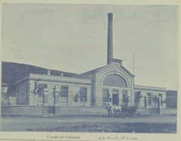

İstanbul’un Sultan Suyu: Hamidiye
Bilinsin namımız arzda, ol hazneye hami diye
Şifa olsun içenlere ab-ı pak-ı Hamidiye
İstanbul, tarihi boyunca su bakımından çevresinden beslenmek zorunda kalmış bir yerleşim yeri olmuştur. Gelişmiş bir kentin en önemli göstergesi tükettiği suların bol ve temiz olmasıdır. Nitekim Osmanlı başkenti bu açıdan da bütün dünyaya örnek olacak özelliklere sahip idi ve haklı olarak burada bir “su medeniyeti” oluşmuştu. Bir şehrin kurulması ve gelişmesi su ile ilişkilerine bağlıdır. İçme ve kullanma suyu bakımından yerleşim yerinin çevresindeki elde edilebilir su miktarı büyük bir nüfusa yetmiyorsa orası büyüyüp şehirleşemez.
İstanbul’un su gereksinimi kentin ilk kuruluşundan bu yana en önemli sorunlardan biri olmuştur. Kuruluşundan itibaren su biriktirmek için setler, taşımak için bakır ve künklü borular, su akışının düzenli ve güvenli olabilmesi için maslaklar, suyu daha yüksek yerlere iletebilmek için kemerler, durulama için havuzlar, dağıtım için teraziler ve yedeklemek için de sarnıçlar yapıla gelmiştir. Günümüzde de hala İstanbul’un su meselesi ile ilgili çalışmalar yoğun biçimde devam etmektedir.
Şehrin su ihtiyacını karşılamayı dini bir görev addeden Osmanlı yöneticileri, sağlam vakıf idareleri altında bu işi uzun müddet sıkıntılara sebep olmadan yürütmüşlerdir. Kanuni Sultan Süleyman devri sonuna kadar rahatlıkla karşılanabilen su ihtiyacı, kaybedilen savaşların sonucunda para değerinin düşmesi ve vakıfların buna paralel olarak zayıflaması sonucunda sıkıntılı bir hal almaya başlamıştır. Vakıf gelirlerinin azalması, suyollarının gerekli olan bakım ve onarımlarının yapılamamasına ve zamanla birçoğunun kuruyup adlarının bile unutulmasına sebep olmuştur. Hatta öyle zamanlar olmuştur ki özellikle bostanların sulanamaması yüzünden tarım ürünlerinde ortaya çıkan üretim azalması İstanbul’a göç edenlerin geri gönderilmelerine bile sebep olmuştur.
İstanbul’un su sorunlarıyla devletin ileri gelenleri bizzat ilgilenmiştir. Osmanlı’nın son dönemine damgasını vuran Sultan II. Abdülhamid henüz saltanatının ilk yıllarında İstanbul’un su sorunu ile ilgilenmiş ve öncelikle bentlerden gelen suların arttırılması için çalışmalar başlatmıştı. Bir zamanların Sâdâbad zevkine hitabeden Kâğıthane suları zamanın bütün tahribatına rağmen XIX. yüzyılda hâlâ İstanbul’un en leziz sularındandı. Su sıkıntısı söz konusu olduğu zaman daima Kâğıthane suları hatırlanır ve oradan istifade etmenin yolları aranırdı. Bu yüzden II. Abdülhamid’in henüz saltanatının ilk yıllarında buradaki suların buhar makineleri vasıtasıyla yükseltilerek Taksim sularına ilave edilmesi gündeme getirilmişti.
Sultan II. Abdülhamid kendi döneminden önce alınan su aktarma pompalarını Kâğıthane deresinde oluşturulan su terfi ve aktarma merkezine yeniden koydurarak kurulan pompa istasyonu sayesinde 1882 yılından itibaren Zincirlikuyu’daki Taksim galerisine su taşınmasını sağlamıştı.
Sultan II. Abdülhamid sürekli beynini meşgul eden su sorunu ile ilgili İstanbul’un memba sularına kavuşması konusunda uzmanlarını çalıştırıyor ve değişik raporlar hazırlatıyordu. Bu raporlara örnek olarak Erkân-ı Harbiye Mirlivası ve Padişah’ın yaverlerinden olan İbrahim Edhem’e bütün İstanbul suları ve ayrıca Kâğıthane suları hakkında hazırlatılanları zikredebiliriz. Nitekim birinci rapora istinaden Kırkçeşme suyolları için tamir çalışmaları başlatılmış, ikinci rapora istinaden de Yıldız ve çevresine memba suyu ulaştırma projesi hayata geçirilmiştir. Kâğıthane’deki kaynak suları tarih içinde hem yöre halkına ve hem de gelip geçenlere hayat vermişti. II. Abdülhamid 1893 yılında tadı beğenilen bu suyun kaynağı civarında, Kâğıthane çayırı ortasında bir çeşme yaptırmıştı.
İstanbul civarında sayısız kaynak suları bulunmaktaydı. Ancak halkın bunlardan hakkıyla istifade ettiği söylenemezdi. Bunun en temel sebeplerinden bir tanesi, söz konusu suların tüketicilere yeterince ulaştırılamamasıydı. Genellikle kaynak suları bir takım sakalar tarafından hijyenik olmayan tahta fıçılarda taşınıp halka satılmaktaydı. Üstelik verilen bu hizmetin bedeli oldukça yüksekti. Diğer taraftan, para ile satılan bu suların ne kadarının kaynak suyu olduğu da daima tartışma konusuydu.
Bu durumun farkında olan ve uzun zamandan beri İstanbul halkının su sıkıntısını gidermeye dönük çalışmalar yaptıran Padişah II. Abdülhamid, adıyla anılacak Hamidiye suyu projesini hayata geçirtmek üzere Adliye ve Mezâhib Nazırı Abdurrahman Paşa’nın başkanlığında bir komisyon kurdurdu.
Birçok kaynakta zikredildiğine göre bu komisyon Emin Bey ile istihkâm feriki Bertier Paşa, sarayın kimyageri fiarl Bongofski Paşa ve birkaç uzmandan oluşmaktaydı.
Padişah söz konusu komisyondan Kâğıthane deresi boyunda Cendere vadisinde bulunan kaynak sularının evsafı ve miktarı hakkında bir rapor istedi. Uzun incelemelerden sonra Padişah’a sunulan raporda Cendere Vadisi’ndeki kaynak sularının Padişah’ın projesi için uygun özelliklere sahip olduğu bildirildi. Yapılan ilk tetkiklere göre suyun evsafı ve miktarının yeterli olduğu kanaatine

varıldı. Hatta Cendere Vadisi’nin ilerisindeki tepelerin arkasına geçildiği takdirde toplanacak su miktarının artabileceği ve sadece Galata ciheti değil, Galata Köprüsü’nün karşısındaki mahallere bile yetebileceği kanaati serdedildi.
Kısa zamanda Kemerburgaz’ın doğusundan başlayıp kuzeye doğru Cendere Köyü civarına kadar uzanan yeşillikte altmıştan fazla kaynağın varlığı tespit edilmişti. Bunun üzerine bütün masrafları Padişah’ın şahsi hazinesinden karşılanmak üzere derhâl inşaata başlanılması iradesi çıktı. Böylece, Berthier Paşa’nın hazırladığı planlar ile inşaat faaliyeti başlatıldı. Bir süre sonra Berthier Paşa izinli olarak ülkesine dönmek durumunda kalınca inşaat işi Hendese-i Mülkiye hocalarından Hulusi Bey’in sorumluluğuna verildi.
İstanbul’da o tarihlerde henüz her konuta su bağlanması geleneği başlamamıştı. Halk, özellikle içme suyu ihtiyacını muhtelif çeşmelerden karşılamaktaydı. Bu yüzden sultanlar, çeşitli derecedeki devlet adamları ve hayır sahipleri İstanbul’un çeşitli noktalarında çeşme yaptırma yarışına girmişlerdi. Yaptırılan çeşmeler, çoğu kere yaptıranın statüsünü de yansıtan ihtişama sahipti. İstanbul çeşmeleri mimari yapıları ve estetikleriyle de dikkat çekiyordu. Böyle bir geleneğe sahip İstanbul’da Sultan Abdülhamid’in yaptıracağı çeşmeler, eskilerinden aşağıda olmamalıydı elbette. Ancak mimari güzelliğe sahip bir çeşmenin inşasının uzun yıllar alabileceği dikkate alındığında, hem bu mahsuru giderecek ve hem de kısa zamanda istifadeye sunulacak çeşme tiplerinin tercih edilmesi de bir zaruret idi. Aslında II. Abdülhamid, cülusunun 25. yıldönümüne yetiştirilmek üzere İmparatorluğun çeşitli yerlerinde çeşme inşaatları başlatmıştı. Bu bakımdan İstanbul’daki Hamidiye çeşmeleri için gerekli alt yapı da oluşmuştu. Hamidiye projesi ile birlikte gündeme alınan ve daha sonra Hamidiye çeşmeleri olarak isimlendirilecek olan bu çeşmeler üç tipte planlanmıştı.
Birincisi, Evkaf Nezareti mimarlarından Daronko Bey’in projesini çizdiğidir. Bunun örneği ise Hamidiye Çeşmeleri’nin ilki olan Tophane’de Nusretiye Camii civarındaki çeşmedir. Som mermerden yapılmış olan ve estetiği İstanbul’daki çeşmelerin hiçbirinden aşağı kalmayan bu çeşmenin inşaatı, Cendere’deki su deposunun inşaatıyla başlatılmıştır. Adeta şarkın bütün estetiğini üzerinde taşıyan ve 133.179 kuruş 29 paraya mal olan bu çeşme II. Abdülha-mid’in cülus yıldönümünde hizmete açılmıştır.
Membalarda toplanan Hamidiye suyunun günlük debisi, 1200-1300 metreküp arasındaydı. Tesisin büyük bölümünün tamamlanması 1318/1900 yılında, suyun verilmesi ve resmen kabulü ise 26 Mayıs 1902 tarihindedir. Şehre günde 1200 metreküp su temin eden tesis, 2 milyon franka (yaklaşık 10 milyon kuruşa) mal olmuştur.
O güne dek kullanılmış olan bütün Osmanlı su tesislerinde sular pişmiş kilden yapılmış künk borular içerisinde isale edilirken ilk defa Hamidiye suyunda font borular kullanılmış, sular bu borular içerisinden basınçla akıtılarak, vanalar ile şebekede hareket etme imkânı sağlanmıştır.
Hamidiye şebekesine bağlı halka açık çeşmelerin yedi tanesi isale hattı üzerinde olup Beşiktaş Sarayı’ndaki on, Yıldız Sara-yı’ndaki otuz ve Dolmabahçe Sarayı’ndaki on beş çeşme ile birlikte toplam çeşme sayısı 148’dir. Bu çeşmeler Hamidiye çeşmeleri ve Hamidiye suyundan beslenen çeşmeler olarak ikiye ayrılmaktadır. Birinci gruptakiler, birkaç tanesi hariç şebekeyle birlikte yapılmış ve aynı tarihte hizmete girmiş, ikinci gruptakiler ise daha önce yine II. Abdülhamid Han veya başka kişiler tarafından yaptırılmış ve sonradan bu şebekeye bağlanmıştır. Hamidiye çeşmelerinin genelde aynı standartta ve nispeten sade oldukları, ancak bazılarının bulundukları yere göre farklı biçimlerde ve daha süslü yapıldıkları görülmektedir.
Hamidiye sularının kaynakları kirlenme riski taşımayan temiz yerlerden oluşuyordu. Kentin sultan suyu Hamidiye genel özellikleri itibariyle berrak, şeffaf, renksiz, kokusuz, temiz ve lezzeti hoş idi. Hamidiye Etfal Hastanesi kimyageri Ali Rıza Bey yapmış olduğu tetkik sonucunda şunları belirtir; “Hamidiye memba suları en saf sular sınıfına dâhildir. Bugün Dersaadet’te bulunan çeşme sularının hepsinden üstün olduğu gibi, şehrimizde fıçılar ve şişeler içerisinde satılan kaynak sularının bir kısmına da tamamıyla eşit; bazılarından daha saf ve sıhhidir.”
Kentin sultan suyu çeşmeler vasıtasıyla şehre ulaştırıldığı dönemde yerli ve yabancı uzmanlarca suyun kimyasal özellikleri incelenmiş ve birçok farklı sonuca ulaşılmıştır. Lezzeti hoş, damak tadına uygun, içimi sıhhatli ve en önemlisi de, şifa kaynaklı sulardan olduğu yapılan tetkiklerden anlaşılmıştır.